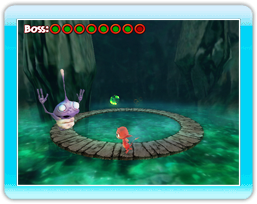

|
8
|
Menú principal
|
 |
|

Desplázate por el menú inclinando la palanca de control hacia delante o atrás. Selecciona una opción pulsando el Botón A y vuelve a la pantalla anterior pulsando el Botón B.
Cargar una partida Elige esta opción para retomar una partida anteriormente guardada.
Nueva partida Comienza una partida de COCOTO Platform Jumper desde el principio. Para confirmar y mostrar la subpantalla, pulsa el Botón A. El juego comenzará desde el principio una vez elegido uno de los tres niveles de dificultad (Fácil, Normal o Difícil).
Récords Consulta el panel de las 10 mejores puntuaciones de COCOTO Platform Jumper.
Combate (2 jugadores) ¡Escoge este modo de juego para iniciar una batalla de dos jugadores! Utiliza la palanca de control para seleccionar a tu personaje y el nivel de juego.
Carrera (2 a 4 jugadores) Desafía a tus amigos en este original modo de juego de 2 a 4 jugadores. Utiliza la palanca de control para seleccionar a tu personaje y el nivel de juego.
Opciones Ajusta los diferentes parámetros del juego, como el sonido. |
 |
 |
 |